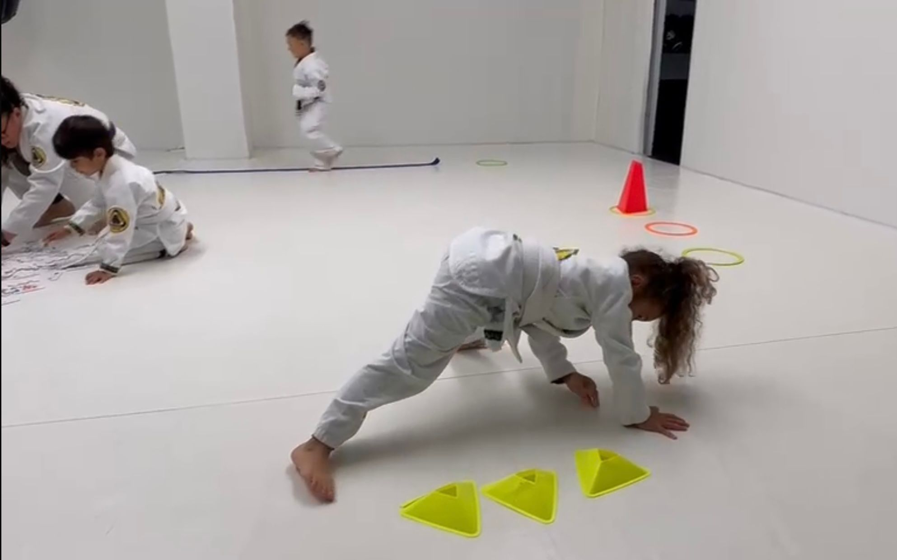
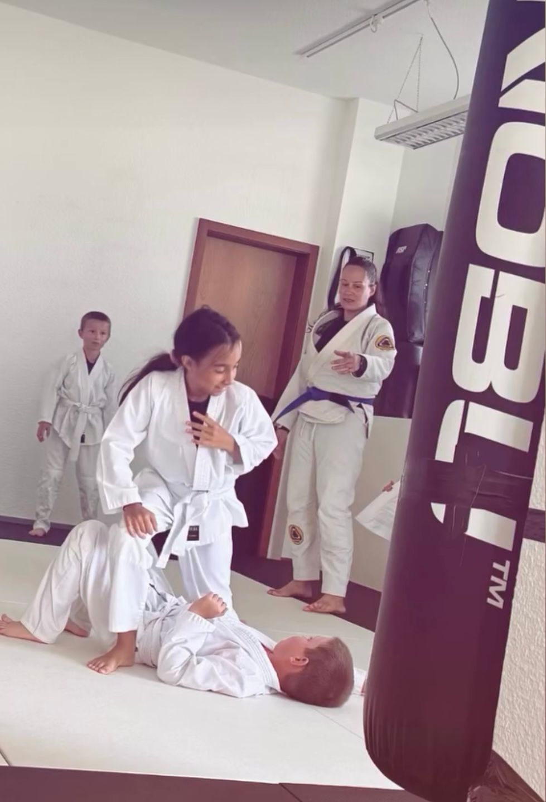
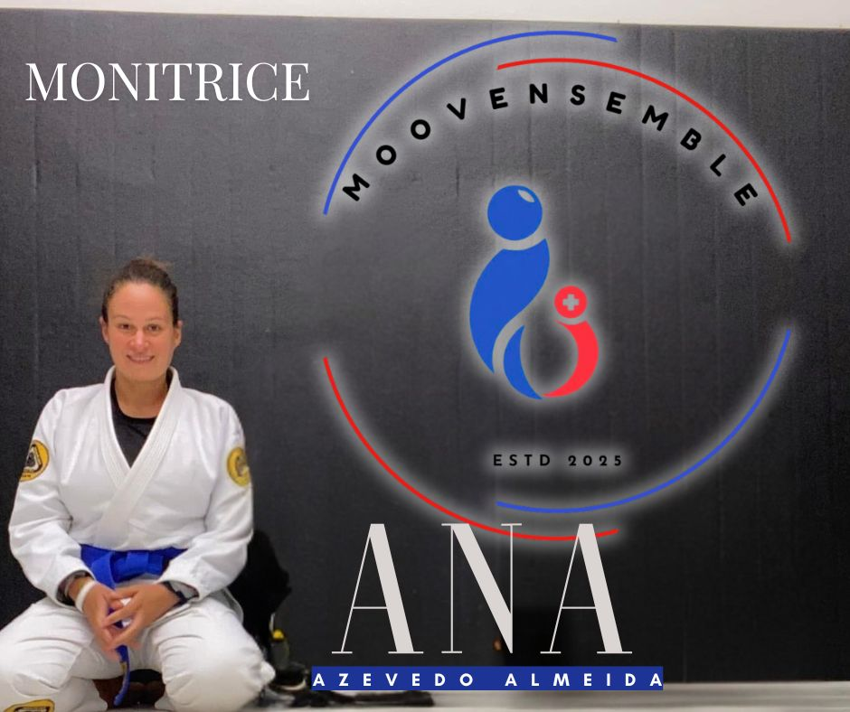
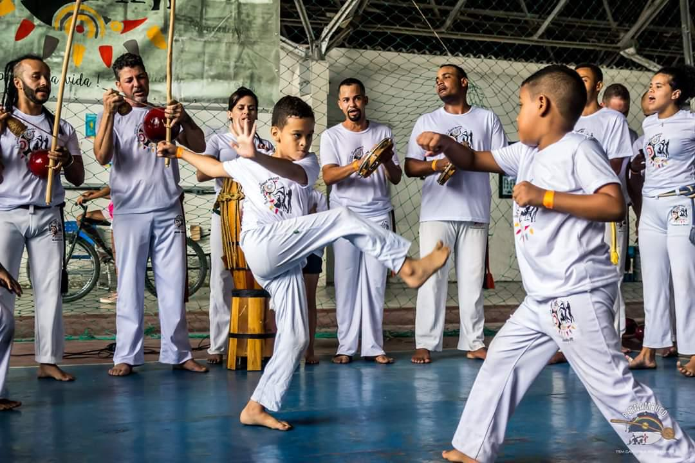
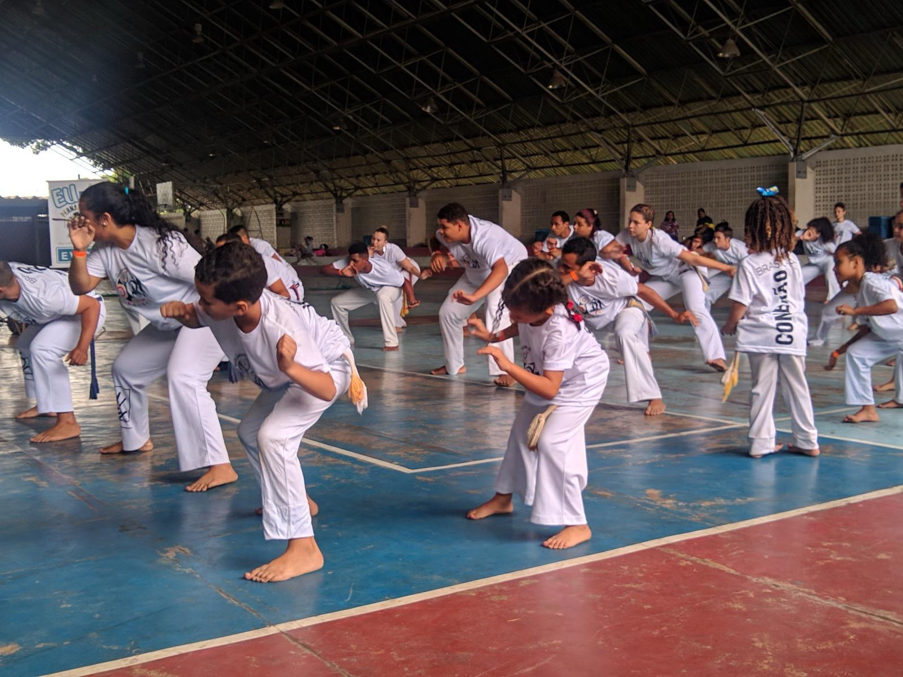
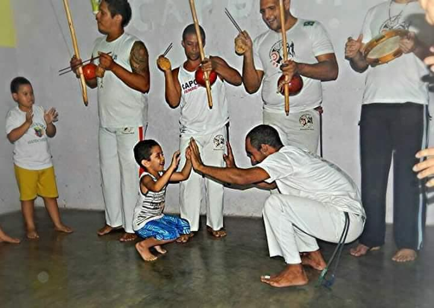
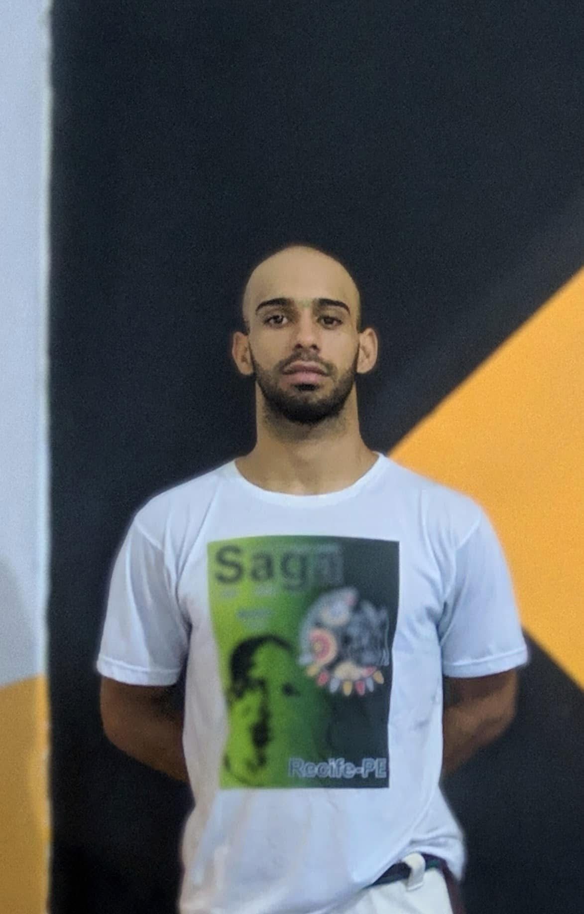

Activités Enfants
Moov’ Kids

Activité ludique et sportive pour développer la mobilité, la coordination et la confiance des enfants, par des jeux sportifs adaptés à leur âge. On bouge, on rit, on apprend à travailler en équipe, basé sur les principes Jeunesse & Sport Allround.
Nous luttons contre la sédentarité, le surpoids, et offrons une alternative saine aux écrans pour favoriser la santé et l’épanouissement des enfants. Nous proposons des exercices variés qui aident à améliorer la posture, l’équilibre et la souplesse des plus jeunes. Ces moments sportifs sont aussi des occasions pour apprendre la discipline, la coopération et le respect des autres.
Les cours sont adaptés pour les 5–12 ans, et si le nombre le permet, nous scindons les groupes en 5–8 et 9–12 ans afin de respecter les rythmes de chacun. À Moov’ Kids, chaque enfant est encouragé à donner le meilleur de lui-même tout en s’amusant et en se sentant valorisé.


Ana Sofia Azevedo Almeida – Monitrice J+S multisports
Diplômée Jeunesse & Sport, coach certifiée et ancienne personne en surpoids, Ana a surmonté elle-même les défis de la sédentarité. Elle est passionnée par la prévention santé et dévouée à transmettre son expérience aux plus jeunes pour leur donner goût au mouvement.
Capoeira

La capoeira est un art martial brésilien unique qui combine combat, danse, musique et chant. Les enfants apprennent non seulement des techniques de mouvement, mais développent aussi leur coordination, leur rythme et leur confiance en eux dans un cadre ludique et sans contact violent.
Grâce à ses racines culturelles, la capoeira est une discipline très riche : elle intègre des instruments, des chants traditionnels et des jeux d’expression corporelle. Pour les enfants, c’est une porte ouverte vers une meilleure compréhension d’eux-mêmes, de leurs émotions et de leur créativité.
Les cours permettent d’améliorer l’endurance, la souplesse, et de travailler le sens de l’équilibre, tout en favorisant l’inclusion et la discipline. C’est une activité physique et culturelle complète, qui leur permet de canaliser leur énergie et de renforcer leur estime d’eux-mêmes.



Talison Batista – Moniteur de capoeira depuis 2011
Talison a découvert la capoeira dès l’âge de 8 ans grâce à un projet social au Brésil. Il enseigne depuis plus de 15 ans aux enfants, adolescents et adultes, convaincu que la capoeira est un outil d’inclusion sociale et d’épanouissement. Son approche bienveillante aide les enfants à se dépasser et à découvrir leurs forces intérieures.